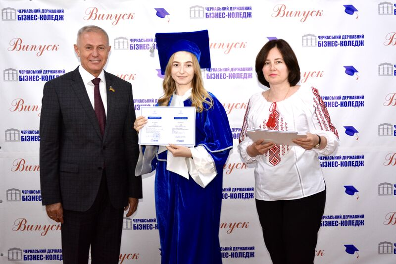
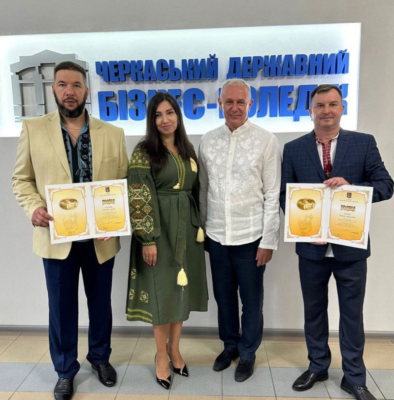
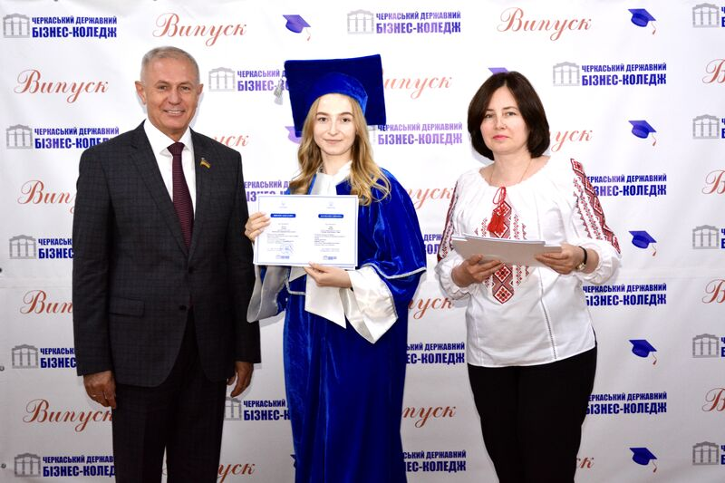
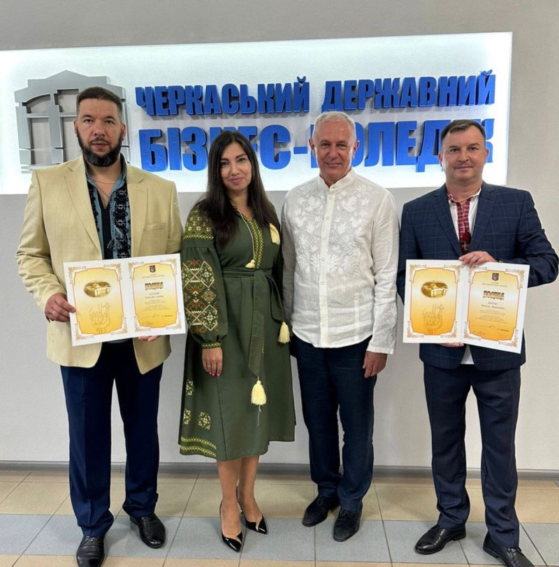
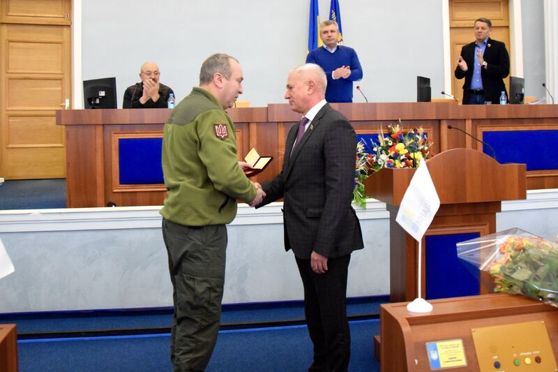
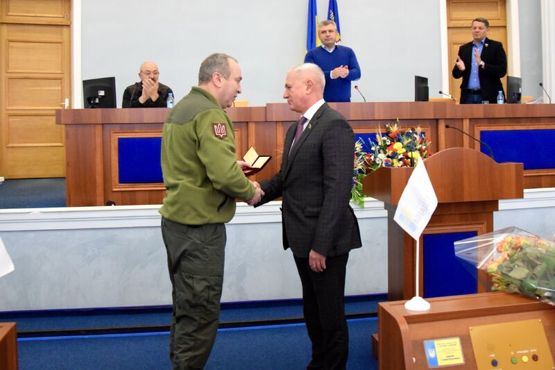

- Народився 18 січня 1961 у місті Шяуляй, Литва
Освіта
- Закінчив Ризький політехнічний інститут, отримавши кваліфікацію "Інженер-механік"
- Вивчав економіку та управління освітою в Академії економіки у Лейпцизі, Німеччина
- Учасник різних міжнародних програм та отримав гранти для навчання та розвитку в США, Канаді, Німеччині
У 2000 році став директором Черкаського державного бізнес-коледжу, він провів три реорганізації нашого навчального закладу. Нагороджений почесними відзнаками: Міністерства освіти і науки України «Відмінник освіти України» (1996), «Петро Могила» (2005), «За наукові та освітні досягнення» (2021) та Національної академії педагогічних наук України «Ушинський К.Д.» (2016), Університету банківської справи "За професійну майстерність" (2016), Федерації роботодавців України «За заслуги» (2020).
Куклін Олег Володимирович
 



 

Черкаський державний бізнес-коледж був заснований в 1966 році
У 1962 році у м.Черкаси розпочалось будівництво заводу азотних добрив, який у подальшому отримав назву - Черкаський хімічний комбінат (Сьогодні - ПрАТ "Азот").
У відповідності з Постановою Ради Міністрів СРСР від 7 листопада 1963 року №1210 частина 1 виконавчий комітет Черкаської міської Ради виділяє земельну ділянку площею 2,04 га на якій у 1964 році розпочинається будівництво технічного училища, яке повинно було забезпечити робітничими кадрами майбутній промисловий гігант України.
Навчальний заклад було відкрито в 1966 році відповідно до наказу Державного комітету Ради Міністрів УРСР по професійно-технічній освіті №57 від 4 травня 1966 року на виробничій базі Черкаського хімічного комбінату. Перша назва – технічне училище № 2 м. Черкаси (Наказ Черкаського обласного управління професійно-технічної освіти від 10 травня 1966 року №47). В подальшому заклад реорганізовувався: у 1984 р. – у середнє професійно-технічне училище № 10 м. Черкаси (наказ Черкаськоого обласного управління професійно-технічної освіти від 10 серпня 1984р. №212), у 1991 р. – вище професійне училище № 10 м. Черкаси (наказ Міністерства народної освіти Української РСР від 04 квітня 1991р. №82).
У 1985 році добудовано навчальний корпус № 2, у 2021р. завершено реконструкцію навчального корпусу №1.
Першим директором училища був призначений Барабаш Всеволод Омельянович (1966 -1967 рр.), заступник начальника відділу обладнання Черкаського хімічного комбінату. Керівниками училища в наступні роки були: Єфремов Борис Андрійович (1967 -1969 рр.), Кучеренко Анатолій Олександрович (1969 -1985 рр.), Стороженко Володимир Наумович (1985 -1990 рр.).
У лютому 1990 року директором СПТУ №10 м.Черкаси було призначено Кукліна Олега Володимировича, який працював у навчальному закладі з 2 січня 1985 року на посадах майстра виробничого навчання, викладача, старшого майстра, заступника директора з навчально-виробничої роботи.
Перші 25 років своєї діяльності навчальний заклад займався підготовкою фахівців, в основному, для ПАТ «Азот». Найбільш відомими випускниками тих років були Корчака Микола Іванович (головний інженер ПАТ «Азот», випуск - 1969), Шепель Володимир Іванович (голова Ради Черкаської обласної профспілки працівників хімічної і нафтохімічної галузей промисловості, випуск - 1974), Шолудько Петро Іванович (начальник цеху контрольно-вимірювальних приладів і автоматики ПАТ «Азот», випуск - 1975), Шабанова Олександра Олександрівна (майстер виробничого навчання, соціальний педагог, м.Черкаси, випуск - 1970), Кривов'яз Іван Григорович (полковник міліції, член президії Черкаської обласної ради, випуск - 1974), Трофімова Лариса Віталіївна (директор юридичного депортаменту Державної податкової адміністрації України, к.ю.н., випуск - 1982).
Дев'яності роки минулого століття стали найважчими в історії навчального закладу. Змінювався підхід до підготовки кадрів, руйнувалися усталені економічні та соціальні зв'язки з базовим підприємством, яке було приватизовано.
У період, коли вся країна переживала кризу, училища в 1994 році перемогло у конкурсному відборі Міністерства освіти України для участі в міжнародному проекті.
ВПУ №10 м.Черкаси було включено до складу двох українських закладів освіти - учасників проєкту "Створення комерційних центрів в України" в рамках консультативної програми ТРАНСФОРМ під керівництвом Федерального Міністерства освіти, науки, технології і досліджень ФРН та Міністерства освіти України. У 1995 році в закладі був створений структурний підрозділ – Модельний навчальний центр з підготовки фахівців для сфери підприємницької діяльності (наказ Міністерства освіти України від 30 червня 1995 р. № 195). Виконавчим директором Центру була призначена Азьмук Надія Анатоліївна, яка працювала в контрольно-ревізійному управлінні у Черкаській області.
Започатковано, вперше в Україні, підготовку нового покоління фахівців із комерційної діяльності в умовах навчально - тренувальної фірми. Здійснюється перший набір, 72 студентів, за спеціальністю "Комерційна діяльність", перші п'ять викладачів проходять стажування у ФРН.
У зв\’язку з впровадженням інноваційних технологій професійно-практичного навчання та відповідно до подання Черкаської обласної державної адміністрації ВПУ № 10 м. Черкаси було реорганізовано у Черкаський модельний центр підготовки та перепідготовки фахівців (наказ Міністерства освіти України від 9 січня 1997 року № 5).
Необхідність забезпечення якісної підготовки фахівців освітньо-кваліфікаційних рівнів «молодший спеціаліст» і «бакалавр» та реалізація в повній мірі системи ступеневої освіти спонукали реорганізувати Черкаський модельний центр підготовки та перепідготовки фахівців у Черкаський державний бізнес-коледж. Реорганізація відбулася 29 серпня 2000 року за погодженням Кабінету Міністрів України, Міністерства фінансів України та Міністерства економіки України (наказ від 29 серпня 2000 року № 412 Міністерства освіти і науки України).
Черкаський державний бiзнес-коледж сьогодні – це три навчальнi корпуси, гуртожиток, корпус господарчо-допомiжних примiщень, загальна площа яких складає 8663,4 кв.м. Маємо стадiон та два спортивних мiстечка, територія налічує понад 2,04 га.
Наразі бізнес-коледж здійснює підготовку фахівців за освітньо-профісійним ступенем «Фаховий молодший бакалавр”». («Молодший спеціаліст») та освітнім ступенем «Бакалавр» за 8 спеціальностями денної та заочної форми навчання на трьох кафедрах: «Економіки, підприємництва та маркетингу», «Обліку та фінансів», «Комп'ютерної інженерії та інформаційних технологій», та трьох відділеннях: «Мультимедійного дизайну», «Інженерії програмного забезпечення», «Підприємництва та маркетингу». За час існування закладу підготовлено 23331 кваліфікованих фахівців для Черкаського регіону та України.
Випускники бакалавріату мають можливість продовжити навчання у Вищій школі менеджменту інформаційних систем (м. Рига, Латвія) за освітнім ступенем «Магістр».
Найкращий показник кадрового потенціалу серед коледжів України: 28% викладачів мають науковий ступінь доктора філософії (кандидата наук) або доктора наук; 31% - присвоєно педагогічне звання «викладач-методист».
28 викладачів пройшли навчання та стажування у ФРН, Канаді, США, Польщі, Ірландії, Латвії, Великій Британії, Чеській Республіці та отримали міжнародні сертифікати. Науково - педагогічними та педагогічними працівниками бізнес-коледжу підготовлено понад 220 авторських навчальних видань для студентів.
Викладачі бізнес-коледжу постійно працюють над удосконаленням авторських освiтнiх програм, якi забезпечили б високоякiсну професійно-практичну пiдготовку випускників, конкурентоспроможних на ринку працi, удосконаленням навчально-матерiальної бази з використанням сучасних інформаційних, телекомунікаційних технологiй, активізацією пізнавальної діяльності студентів в умовах інтегрованого освітнього простору, оптимальним поєднанням досвiду закордонних методик пiдготовки спецiалiстiв з вiтчизняними для досягнення найкращих результатiв у навчаннi студентiв.
У 1985 році навчальний заклад вперше атестовано для надання освітніх послуг за рівнем повної загальної середньої освіти.
У 1995 році розпочато проведення навчальних занять студентів економічних спеціальностей в умовах моделювання підприємницької діяльності
У 1996 році за успішне виконання завдань, визначенних міжнародною Програмою ТРАНСФОРМ, 15 викладачів навчального закладу нагороджено знаком "Відмінник освіти України" та Почесною грамотою Міністерства освіти України.
У 2001 році в коледжі запроваджено підготовку бакалаврів.
У 2003 році коледж нагороджено Почесною Грамотою Міністерства освіти і науки України за значний внесок у справу підготовки висококваліфікованих фахівців комерційної діяльності та впровадження інноваційних технологій навчання. Коледж вперше пройшов державну акредитацію з напряму «Економіка і підприємництво» за освітньо-кваліфікаційним рівнем бакалавр.
У 2004 році коледж визнано Переможцем Всеукраїнського конкурсу якості продукції в Черкаській області в номінації «Надання освітніх послуг, пов'язаних з одержанням вищої освіти». Кількість студентів, які навчаються на денній формі навчання, перевищила 1100 осіб.
У 2008 році коледж нагороджено Дипломом Міністерства освіти і науки України та Академії педагогічних наук України за високі творчі досягнення в удосконаленні змісту навчально-виховного процесу.
У 2009 році коледж нагороджено Грамотою Міністерства освіти і науки України з активну участь у Всеукраїнському конкурсі фахової майстерності серед студентів спеціальності «Комерційна діяльність».
У 2009 році коледж визнано Переможцем серед ВНЗ України І-ІІ рівнів акредитації в рамках національної програми «Діловий імідж України. Національні досягнення» та нагороджено срібною відзнакою «Визнання року-2009».
У 2010 році вперше працівника навчального закладу – Кукліна О.В. обрано депутатом Черкаської міської ради.
У 2011 році коледж нагороджено Грамотою Національної академії педагогічних наук України за значний вклад в організацію і проведення Всеукраїнського молодіжного конкурсу «Новітній інтелект України».
У 2013 році вперше викладачу бізнес-коледжу, доктору економічних наук Кукліну О.В. присвоєно вчене звання професора.
У 2016 р. бізнес-коледж у конкурсі Черкаської торгово-промислової палати «Під знаком Меркурій» став Переможцем у номінації «Інновації в освіті 2016» та Лауреатом у номінації «Лідер освіти 2016»
У 2017 році спільно з ГС "Черкаси IT КЛАСТЕР" започатковано волонтерський освітній проект IT KIDS, у рамках якого студенти та викладачі коледжу навчають школярів основам технологічної грамотності та базовим навичкам програмування.
У 2017 році на базі коледжу відкрито центр вивчення іноземних мов Lingua Hub, який отримав акредитацію як освітньо-екзаменаційний центр підготовки до міжнародних мовних тестів TOEFL iBT test та TOEFL Listening and Reading test.
У 2017 - 2020 роках у рамках співпраці з освітнім фондом Brain Basket Foundation, Асоціацією «IT Ukraine», АТ«УКРСИББАНК», Київським національним університетом технології та дизайну, Посольством США в Україні, ГС «ЧЕРКАСИ ІТ КЛАСТЕР», компанією «eKreative» та іншими громадськими організаціями створено лабораторію онлайн-навчання та три лінгвістичні лабораторії, 16 навчальних кабінетів оснащені сучасною комп’ютерною технікою та мультимедійним обладнанням.
У 2021 році, за фінансової підтримки Черкаської обласної ради та ГО "Рада батьків Черкащини" створено сучасну лабораторію програмної інженерії.
Бізнес-коледж є колективним членом Черкаського обласного союзу промисловців і підприємців (2001 р.), Черкаського обласного об’єднання організацій роботодавців (2004 р.), Черкаської торгово-промислової палати (2006 р.), Соціологічної асоціації України (2015 р).
Перший міжнародний договір про співпрацю з профтехучилищем Хімічного комбінату Біттерфельд Німецької Демократичної Республіки було укладено у 1973 році. З 1975 по 1989 рік відбувалися обміни студентів та педагогічних працівників з німецькими партнерами з м. Біттерфельд, з 1993 по 1999 рік – з партнерами з м. Ганновер, ФРН. Заклад першим в Україні у 1995 році започаткував співпрацю із навчальними закладами ФРН з асоціації «EUROPEN International». За підтримки уряду ФРН та Міністерства освіти України у рамках програми ТРАНСФОРМ у 1995 – 1999 роках було отримано технічну та фінансову допомогу, що дало можливість кардинально змінити матеріально-технічну базу, залучити нових викладачів, провести їх стажування у ФРН, повністю припинити підготовку за робітничими спеціальностями та відкрити сучасні спеціальності, яких потребував ринок праці у Черкаський області.
З 2002 року заклад бере участь у проекті Уряду США «Молодіжний розвиток», у рамках якого у бізнес-коледжі постійно працювали волонтери Корпусу Миру США.
У 2008 року бізнес-коледж брав участь у роботі регіонального Інституту підприємництва CISCO за підтримки Стенфордського та Корнельського університетів, США.
У 2015, 2016 та 2019 роках троє викладачів брали участь у Програмах Американських Рад з міжнародної освіти «Відкритий світ», один - Державного департаменту США «Програма міжнародних візитерів - лідерів», та «Сімпозіум випускників у Вашингтоні» у США.
Підписано Угоду про наміри з Broward College (Florida, USA) про відкриття American College in Ukraine. Розроблено англомовну програму «Бізнес-адміністрування», за системою 2+2, яка передбачає два роки навчання в Україні і два роки у США, та отримання американського диплома освітнього рівня «Бакалавр».
Бізнес-коледж брав активну участь у Програмі академiчних обмiнiв iменi Фулбрайта в Українi. Помічник віце-президента з економічного розвитку коледжу Санта Фе (Флорида, США) Даг Джонс, працював у навчальному закладі у 2017 році.
У 2015 році на базі бізнес-коледжу відкрито Черкаський навчально-консультаційний центр Київського національного університету технологій та дизайну та розпочато підготовку за двома спеціальностями освітнього ступеня «Бакалавр»: «Комп’ютерні науки» та «Дизайн» і за чотирма спеціальностями освітнього ступеня «Магістр»: «Економіка», «Маркетинг», «Облік і оподаткування», «Комп’ютерні науки».
З 2016 року бізнес-коледж є учасником програми Європейского Союзу "Еразмус+" за напрямом "КА 1: академічна мобільність", у рамках якої студенти та викладачі щосеместрово отримують гранти на навчання та викладання і стажування у Вищій школі менеджменту інформаційних систем, м. Рига, Латвія. Вже залучено шістнадцять семестрових грантів для студентів та чотирнадцять для викладачів на загальну суму більше 105 тис. євро. Програма продовжена до 31 липня 2025 року.
У 2017 відповідно до Указу Президента України №458/2017 від 29 грудня викладачу, докторові політичних наук Васильчуку Євгену Олеговичу присуджено премію Президента України для молодих вчених 2017 року.
У 2018 році створено дві кафедри: «Обліку та фінансів» та «Економіки підприємництва та маркетингу». Перші 10 викладачів обрано на посади професорів та доцентів, завідуючими кафедр призначено Кузнецову Наталію Богданівну, к.е.н. та Здіра Віктора Анатолійовича, к.е.н.
У 2018 році 23 студенти відділення «Інформаційних технологій», які успішно пройшли курс CS50 «Introduction to Computer Science» та захистили фінальний проект, першими в Україні отримали оригінальні сертифікати Гарвардського університету.
У 2019 році відповідно до Постанови Верховної Ради України № 2670-VIII від 15 січня викладач доктор політичних наук Васильчук Є. О. став лауреатом Премії Верховної Ради України найталановитішим молодим ученим в галузі фундаментальних і прикладних досліджень та науково-технічних розробок за 2018 рік.
У 2019 році відповідно до Указу Президента України №188/2019 від 4 травня викладачу відділення дизайну Гладьку Максиму Володимировичу присвоєно почесне звання «Заслужений художник України».
У 2020 році відповідно до Указу Президента України №579/2020 від 18 грудня викладачу української мови та літератури Красюк Валентині Леонтівні призначено строком на два роки державну стипендію видатним діячам освіти
У 2020 році черкащани обрали депутатами Черкаської обласної ради – Кукліна Олега Володимировича, директора та Черкаської міської ради – Холупняк Катерину Олександрівну, викладача циклової комісії комп’ютерної інженерії, випускницю Черкаського державного бізнес-коледжу.
У 2021 році розпочато підготовку бакалаврів за спеціальністю "Комп'ютерна інженерія".
У 2021 році студентка Вероніка Фалілєева отримала грант Державного департаменту США для річного навчання у коледжі College of DuPage, State Illinois, а студенти Дарія Дрозд, Микита Азьмук, Едуард Задорожній – гранти програми «Еразмус+» для семестрого навчання у Вищій школі менеджменту інформаційних систем, Рига.
Станом на 1 жовтня 2022 року до занять приступили 1117 студентів.
У 2022 році студент першого курсу Денис Кладко виборов грант програми "Коледжі об'єдначого світу" на навчання протягом двох років у коледжі United World College Maustricht, Нідерланди, а студенти третього курсу Пшегорський Станіслав та Іван Масол - гранти на річне навчання в Vancover Institute of Media Arts, Канада .
У 2022 році відповідно до Указу Президента України №676/2022 від 30 вересня директору Черкаського державного бізнес-коледжу Кукліну Олегу Володимировичу присвоєно почесне звання "Заслужений працівник освіти України".
У лютому та у вересні 2023 року студенти бакалаврату Анастасія Чорна і Альона Бузько та відповідно Рената Вівчар і Вероніка Сомерня отримали гранти програми Європейського Союзу «Еразмус+» за напрямом КА1: навчальна мобільність (KA1:Learning Mobility of Individuals) на навчання протягом одного семестру у Вищій школі менеджменту інформаційних систем ISMA, м.Рига, Латвія.
У квітні 2023 року започатковано новий проєкт академічної мобільності для здобувачів освіти та викладачів у рамках Програми ЄС «Ерасмус+» з Відземським університетом прикладних наук (м.Валмієра, Латвія), який передбачає отримання бізнес-коледжем щорічно 8 грантів на навчання та стажування в Європі. Перші п’ять викладачів пройшли стажування у травні та жовтні 2023 року.
У липні 2023 року чотири студента (Марія Моляка, Аліна Тарануха, Олександра Назарова, Богдан Палій) вибороли гранти Державного департаменту США на навчання в американських коледжах протягом 2023 - 2024 академічного року. Кожен грант повністю покриває всі витрати на перебування, страхування, подорож та навчання в США.
У 2023 році бізнес – коледж за підсумками проведення національного мультипредметного тесту посів 12 місце серед коледжів (академій, фахових коледжів) України, за підсумками вступної компанії увійшов до 10 найпопулярніших коледжів (фахових коледжей) України, /p>
У 2023 році бізнес – коледж за підсумками участі в Міжнародній виставці "Інноватика в сучасній освіті" удостоєно Почесної нагороди «Лідер інновацій в освіті» (єдиний коледж в Україні , хто виборов почесну відзнаку).
Станом на 1 вересня 2023 року до занять приступили 1198 здобувачів освіти за вісімью спеціальностями (для здобуття ступеня бакалавра, молодшого бакалавра, фахового молодшого бакалавра).
У 2023 році відповідно до Указу Президента України №605/2023 від 29 вересня викладачу української мови та літератури Красюк Валентині Леонтівні повторно призначена строком на два роки державну стипендію для видатних діячів освіти.
У 2024 році бізнес-коледж увійшов у ТОП-115 кращих закладів вищої освіти України за показником «відкритості» (Openness Rank) та займає загальне 222 за загальним показником вебометричного рейтингу університетів світу The Webometrics Ranking of World Universities (станом на лютий 2024 року).